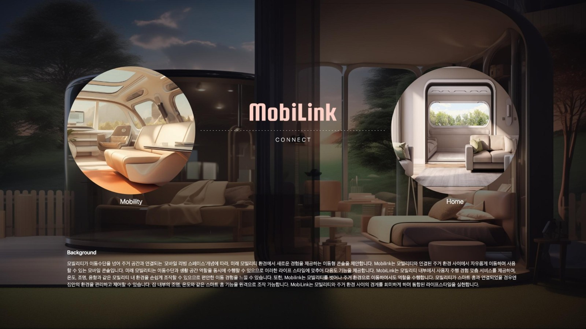
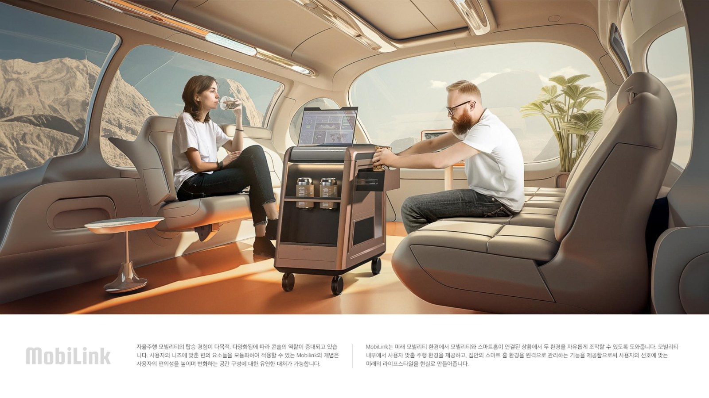

MobiLink.
미래 목적기반차량(PBV)의 무빙 라운지를 위한 탈부착형 스마트 도킹 유닛. 이동 중에도 카페와 라운지의 경험이 이어지도록 설계된 Hooogh Unit입니다. IDEA·SPARK Design Award Finalist.

이동 공간을 머무는 시간으로 바꾸는 도킹 유닛.
자율주행이 보편화된 미래에는 이동 시간이 ‘생활 공간’으로 재편됩니다. MobiLink는 목적기반차량(PBV) 내부에 도킹되어 커피·음료 조리, 무선 충전, 스마트 서페이스 기능을 통합적으로 제공하는 퍼스널 컴패니언 유닛입니다.
PC Docking Tech, Smart Surfaces, Transparent Camera, Transparent Display 등 다층 기술을 얇은 브론즈 알루미늄 바디 안에 응축했습니다.

Fig. 02 — Two Contexts
Fig. 03 — Cabin Integration-
01Phase 01
Research
미래 모빌리티 시나리오, PBV 서비스 트렌드, 소비자 라이프스타일 데스크 리서치.
-
02Phase 02
Concept
MobiLink “Connect Mobility & Home” 컨셉 확립, 유즈케이스 시나리오 매핑.
-
03Phase 03
Design
Low-fi 스케치, 3D 모델링, CMF 스터디, 렌더링과 그래픽 시스템 개발.
-
04Phase 04
Final
수상 출품, SPARK / IDEA 파이널리스트 선정.
Surface 상판이 곧 스피커가 되어 음악이 공간에 스며듭니다.
Step 휠 하부의 무선 충전 도킹으로 유닛은 필요할 때만 이동합니다.
Function
Panel 상판 손끝 터치로 냉장·조리·서브의 모든 조작.
“이동 공간은 더 이상 대기실이 아니다.— Concept Note, 2023
MobiLink는 지금 이 순간의 라운지다.”
Smart Surface Speaker. 상판이 곧 스피커가 되어, 음악은 공간에 스며듭니다.
PBV Docking Step. 휠 하부에 마련된 무선 충전 도킹 구조로, 유닛은 필요할 때만 이동합니다.
Multi-Function Panel. 상판 손끝 터치로 냉장·조리·음료 서브의 모든 조작이 가능합니다.